DIVERSOS
Esse módulo tem como finalidade o lançamento e controle dos débitos que não se originam de lançamentos efetuados pelas rotinas do sistema, ou seja, nesse módulo pode-se fazer lançamentos de débitos avulsos para os contribuintes.
Podemos citar como exemplo de débitos gerados por rotinas do sistema o IPTU, que possui um módulo próprio para seu controle e lançamento. Outro exemplo de débito que é lançado através de uma rotina do sistema é o ISSQN, que possui módulo para efetuar seu controle e lançamento.
Podemos citar como exemplos de débitos que podem ser lançados no módulo diversos:
-valores correspondentes a venda de lotes pela prefeitura;
-valores correspondente a restituição pelos servidores ao erário.
ABA PROCEDÊNCIA DOS DIVERSOS
O cadastro de precedências é a identificação da origem do débito, ou seja, é através da procedência que podemos identificar os motivos dos lançamentos dos débitos nesse módulo. Seria semelhante a uma divisão por grupos ou natureza do registro/lançamento, ou seja, uma forma de categorização para futura consulta/relatório.
No cadastro de precedências fica registrado a receita em que o débito será lançado, o histórico de cálculo e em qual grupo de débito vai estar inserido quando for efetuada a consulta na Consulta Geral Financeira.
Na procedência fica registrado também para qual receita será transferido o débito no caso de efetuar um parcelamento.
Para realizar o cadastro de uma procedência, devem ser preenchidos os seguintes campos:
Procedência
Esse campo corresponde ao código do registro que está sendo inserido e será preenchido automaticamente quando efetivar a inclusão.
Descrição abreviada
Digite uma descrição de forma sucinta que identifique o cadastro que está sendo efetuado. Esse campo permite uma descrição com até 20 dígitos.
Descrição Completa
Digite uma descrição completa que identifique o cadastro que está sendo efetuado. Esse campo permite uma descrição com até 40 dígitos.
Receita
Informe o código da receita correspondente à procedência de débito que está sendo cadastrada. Caso não saiba o código, clique no link para pesquisar pelo nome da receita.
Esse código corresponde a qual receita orçamentária será lançado o débito quando for efetuada a inclusão de um diverso e em qual receita será contabilizada a arrecadação quando for efetuado o pagamento desse débito.
Histórico de Cálculo
Informe o código do histórico de cálculo correspondente ao tipo de débito.
Esse histórico também serve como forma de identificação da parcela do débito na Consulta Geral Financeira.
Ex.: Diversos, loteamentos, etc.
Tipo de Débito
Informe o código do tipo de débito que deseja que os débitos que forem cadastrados nessa procedência sejam agrupados quando forem consultados na Consulta Geral Financeira.
Ex.: Diversos
Após lançar as informações descritas nos campos acima, clique no botão “incluir”. Automaticamente será ativada a aba para informar a receita para parcelamento do diverso.
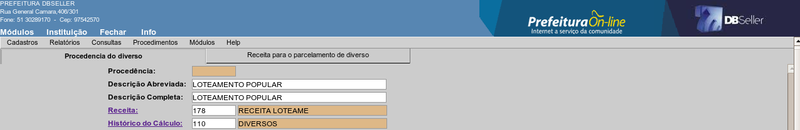
figura
1
ABA RECEITA PARA PARCELAMENTO DE DIVERSO
Receita de Parcelamento
Informe o código da receita orçamentária que será transferido o débito no caso de parcelamento de um diverso incluído nessa procedência. Caso não saiba o código, clique no link para pesquisar pelo nome da receita.
Após selecionar a receita desejada, clique no botão incluir conforme figura 2.
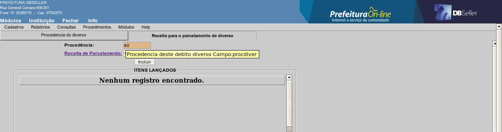
figura
2
Para alterar uma procedência, selecione o registro desejado na lista conforme demonstrado na figura 3 e proceda com a alteração, modificando os dados desejados.
Atenção
A alteração de campos como: receita, histórico de cálculo, tipo de débito ou receita para parcelamento, não afetaram os registros de diversos que tenham sido incluídos anteriormente a alteração.
Ex.: caso tenha sido incluído um débito em diversos em uma determinada procedência que estava vinculada a receita 001 e posteriormente efetuou-se a alteração dessa procedência para 002, o registro de diversos incluído anteriormente a alteração, continuará vinculado a receita 001.
Para excluir uma procedência, selecione o registro desejado na lista conforme demonstrado na figura 3 e proceda a exclusão.
Atenção
Não será permitida a exclusão de procedências que já tenha sido incluído diversos vinculados a ela, mesmo que esse débito já tenha sido pago, parcelado, cancelado ou prescrito.
Para efetuar consulta de diversos, informe a chave de pesquisa conforme demonstrado na figura 3.
Código do Diverso
Informe o código do registro no diversos ou clique no link para selecionar em uma lista. Os dados do registro serão apresentados conforme demonstrado na figura 4.
Numcgm
Informe o código do CGM ou clique no link para pesquisar pelo nome do contribuinte. Será apresentada uma lista com todos os registros de diversos lançados para o CGM informado, clique sobre o item desejado para visualizar a consulta.
Matrícula do Imóvel
Informe a o código da matrícula ou clique no link “Matrícula do Imóvel”para pesquisar pelo nome do proprietário, setor, quadra, lote, etc. Será apresentada uma lista com todos os registros de diversos lançados para a matrícula informada, clique sobre o item desejado para visualizar a consulta.
Inscrição Municipal
Informe a o código da Inscrição ou clique no link “Inscrição Municipal” para pesquisar pelo nome da empresa ou do profissional autônomo. Será apresentada uma lista com todos os registros de diversos lançados para a inscrição informada, clique sobre o item desejado para visualizar a consulta.
Procedência
Informe o código da procedência ou clique no link para pesquisar pela descrição da procedência. Após clicar no botão pesquisar, será apresentada uma lista com todos os registros de diversos lançados na procedência indicada, clique sobre o item desejado para visualizar a consulta.
Data
Informe o intervalo de datas que deseja pesquisar. Após clicar no botão pesquisar, será apresentada uma lista com todos os registros de diversos cuja data de inscrição esteja dentro do período informado, clique sobre o item desejado para visualizar a consulta.
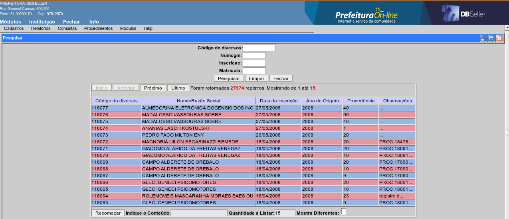
figura
3
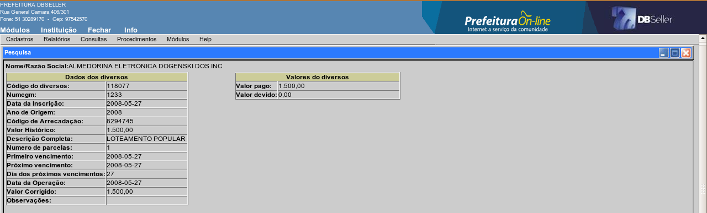
figura
4
Nesse relatório, será impressa a relação com os registros lançados no módulo diversos de acordo com as opções de filtros selecionados.
Código do Diverso
Informe o código do registro no diversos ou clique no link para selecionar em uma lista. Nessa opção, será gerado relatório contendo apenas o registro informado.
Numcgm
Informe o código do CGM ou clique no link para pesquisar pelo nome do contribuinte. Nessa opção, será gerado relatório com todos os registros de diversos lançados para o CGM informado.
Matrícula do Imóvel
Informe a o código da matrícula ou clique no link “Matrícula do Imóvel” para pesquisar pelo nome do proprietário, setor, quadra, lote, etc. Nessa opção, será gerado relatório com todos os registros de diversos lançados para a matrícula informada.
Inscrição Municipal
Informe a o código da Inscrição ou clique no link “Inscrição Municipal” para pesquisar pelo nome da empresa ou do profissional autônomo. Nessa opção, será gerado relatório com todos os registros de diversos lançados para a inscrição informada.
Procedência
Informe o código da procedência ou clique no link para pesquisar pela descrição da procedência. Nessa opção, será gerado relatório com todos os registros de diversos lançados na procedência indicada.
Data
Informe o intervalo de datas que deseja imprimir o relatório. Nessa opção será gerado relatório com todos os registros de diversos cuja data de inscrição esteja dentro do período informado.
Situação
Selecione a situação dos débitos que deseja que imprima no relatório, ou seja, débitos de diversos pagos, não pagos, cancelados ou todos.
Tipo
Selecione nessa opção se deseja gerar relatório que contenha somente os débitos vencidos, somente os não vencidos ou todos.
Atenção
Caso não seja preenchida nenhuma opção dos filtros mencionados anteriormente e clicar no botão “Gerar relatório” será emitido relatório contendo todos os registros lançados no diversos, obedecendo apenas as opções marcadas na situação e no tipo.
No modelo demonstrado nas figuras 5 e 6, foi utilizado como filtro o intervalo de datas.
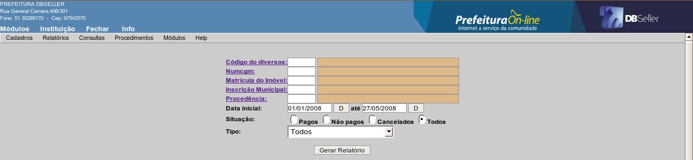
figura
5
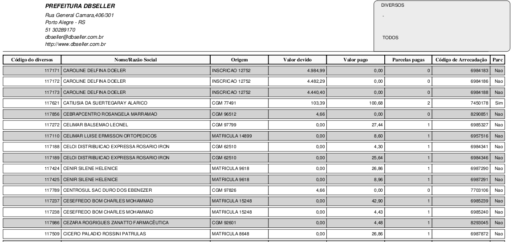
figura
6
Esse procedimento consistem em efetuar a inclusão de um débitos para um determinado contribuinte, utilizando-se das procedências como fonte de recurso para relacionamento desses débitos com a receita que será vinculado.
Os débitos lançados nesse módulo, podem ser vinculados ao contribuinte de três formas:
Vincular somente ao nome do contribuinte - preencha o respectivo campo com o código do CGM ou clique no link “Nome/Razão Social” para pesquisar pelo nome.
Vincular a uma matrícula de imóvel - preencha o respectivo campo com o código da matrícula ou clique no link “Matrícula do Imóvel” para pesquisar pelo nome do proprietário, setor, quadra, lote, etc.
Vincular a uma inscrição municipal - preencha o respectivo campo com o código da inscrição ou clique no link “Inscrição Municipal” para pesquisar pelo nome da Empresa ou profissional autônomo do cadastro de alvarás.
Após definir a chave que deseja efetuar a inclusão do débito, clique no botão “pesquisar” e preencha os campos conforme segue descritos a seguir. Na demonstração, será efetuada a inclusão de um débito diverso para um CGM, conforme figura 7.
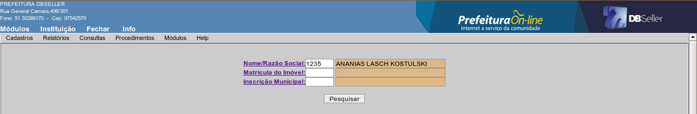
figura
7
Data da Inscrição
Informe a data que queira registrar como data de cadastramento desse débito. Esse campo virá sempre será carregado por padrão com a data do dia, porém pode ser alterado, para isso basta informar a data desejada.
Ano de Origem
Informe o ano do débito que está sendo cadastrado. Esse campo sempre será carregado por padrão com a ano corrente.
Procedência
Selecione a procedência que deseja vincular o débito que está sendo cadastrado, para isso clique na seta ao lado da descrição para que apareçam todas as procedências.
Primeiro vencimento
Informe a data de vencimento do débito. Esse campo será sempre carregado por padrão com a data do dia, porém pode ser alterado, para isso basta informar a data desejada.
Valor Histórico
Informe o valor histórico do débito. Valor histórico corresponde ao valor do débito na época de sua constituição.
Código do Inflator
Esse campo será preenchido automaticamente com o inflator que está configurado na receita vinculada à procedência selecionada para efetuar a correção do débito a partir da date de operação até a data atual. O código do inflator só será mostrado se clicar no botão “calcular” ao lado do campo valor histórico.
Data da Operação
Informe a data de operação do débito. A data corresponde a data que foi constituído o débito. Esse campo virá sempre será carregado por padrão com a data do dia, porém pode ser alterado, para isso basta informar a data desejada.
Valor corrigido
Esse campo corresponde ao valor do débito corrigido até a data atual e será preenchido automaticamente quando clicar no botão calcular ao lado do campo valor histórico. Esse valor é que será apresentado na Consulta Geral Financeira como valor histórico do débito. Caso queira registrar nesse campo o mesmo valor que foi informado no campo valor histórico, basta digitar o valor sem clicar no botão calcular.
Número de parcelas
Informe nesse campo a quantidade de parcelas que deseja lançar para o débito. Esse campo sempre será carregado como padrão com 01(uma) parcela.
Próximo Vencimento
Esse campo somente será habilitado caso seja informado mais de uma parcela no campo número de parcelas e corresponde a data de vencimento da segunda parcela.
Dia dos próximos vencimentos
Esse campo somente será habilitado caso seja informado mais de uma parcela no campo número de parcelas e corresponde a dia do vencimento da terceira parcela em diante (caso houver).
A data de vencimento das demais parcelas será montada considerando o dia informado nesse campo e o mês subseqüente ao mês de vencimento da segunda parcela.
Observações
Nesse campo pode ser digitada qualquer observação que se queira fazer a respeito desse débito que está sendo incluído.
Atenção
Caso seja incluído um valor como débito diverso e seja informado mais de uma parcela, será lançado o valor tantas vezes quanto o número de parcelas informadas.
Ex.:
Caso o valor do débito seja R$ 1.000,00 e o número de parcelas seja 4, será lançado 4 parcelas de R$ 1.000,00.
Caso queira efetuar o lançamento de um débito no diverso em parcelas, lance o valor total e informe apenas 01 parcela, posteriormente acesse a Consulta Geral Financeira e efetue o parcelamento desse débito através da rotina de parcelamento, pois dessa forma um documento chamado Termo de Parcelamento será gerado/emitido para melhor controle, inclusive com espaço para assinatura por parte do contribuinte.
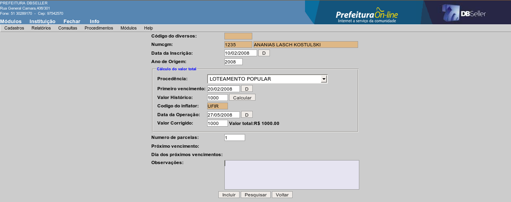
figura
8
Para alterar um débito incluído como diversos, selecione o registro desejado na lista conforme demonstrado na figura 9 e proceda a alteração das informações.
Para excluir um débito incluído como diversos, selecione o registro desejado na lista conforme demonstrado na figura 9, após clique no botão excluir.
Atenção
Não é permitido alterar nem excluir registros de diversos que tenham sido pagos, parcelados ou cancelados.
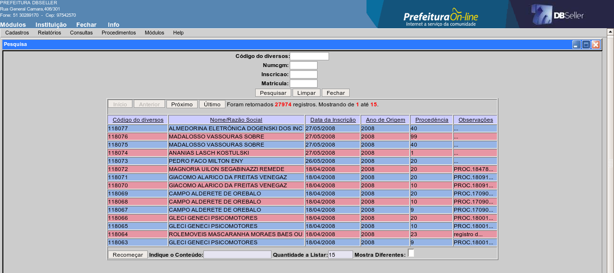
figura
9
Nessa rotina é possível fazer a correção das receitas de um determinado débito ou de um grupo de débitos que tenha sido inserido como diversos e estejam lançados em uma receita errada. Para isso, selecione a chave de pesquisa da seguinte maneira:
Código do Diverso
Informe o código do débito no diversos ou clique no link para selecionar na lista o registro desejado. Nesse caso, a troca de receita será efetuada somente nesse registro.
Numcgm
Informe o código do CGM do contribuinte ou clique no link para pesquisar pelo nome. Nesse caso será efetuada a troca de receita para todos os registro de diversos vinculados ao CGM informado.
Matrícula do Imóvel
Informe o código da matrícula do imóvel ou clique no link para pesquisar por logradouro, proprietário, setor, quadra, etc.. Nesse caso será efetuada a troca de receita para todos os registro de diversos vinculados à matrícula informada.
Inscrição Municipal
Informe o código da Inscrição Municipal ou clique no link para pesquisar pelo nome da empresa ou profissional autônomo. Nesse caso será efetuada a troca de receita para todos os registro de diversos vinculados à inscrição informada.
Procedência
Informe o código da procedência desejada ou clique no link para selecionar na lista o registro desejado. Nesse caso, será efetuada a troca de receita para todos os registro de diversos que estiverem vinculados a procedência informada.
Na demonstração, será utilizado como exemplo, a troca de receita de um débito vinculado a um CGM conforme figura 10.
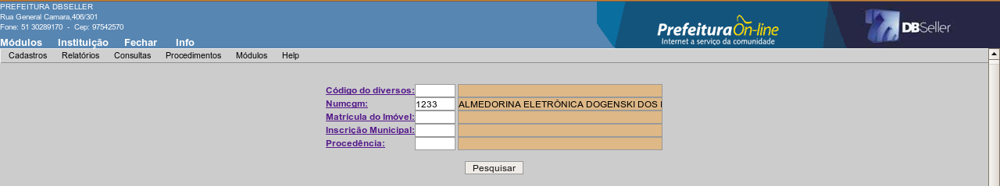
figura
10
Receita
Informe nesse campo a nova receita que deseja que fique registrado no débito. Caso não saiba o código da receita, clique no link para pesquisar pelo nome.
Tipo de processamento
Selecione nessa opção quais os registros de diversos desse contribuinte deseja alterar a receita, ou seja, poderá efetuar a troca somente dos débitos vencidos, somente dos débitos não vencidos ou de todos os débitos.
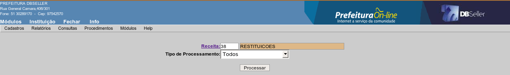
figura
11
|
DBSeller Serviços de Informática Ltda. – www.dbseller.com.br Rua General Câmara, 406/301 – Porto Alegre/RS – Fone: (51) 3076-5101 |
|